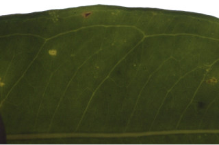
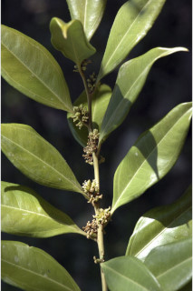
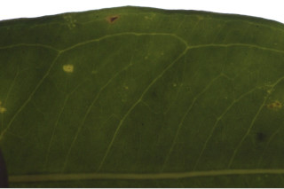
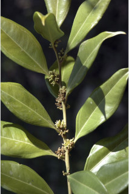
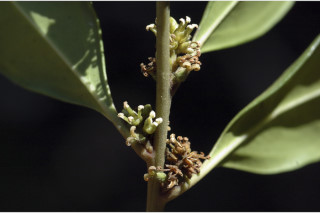
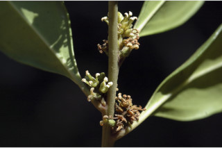

Trees up to 4 m tall.
4 ಮೀ. ಎತ್ತರದ ಮರಗಳು.
Trees up to 4 m tall.
மரங்கள் 4 மீ. உயரம் வரை வளரக்கூடியது.
Bark smooth.
ತೊಗಟೆ ನಯವಾಗಿರುತ್ತದೆ.
Bark smooth.
மரத்தின் பட்டை வழுவழுப்பானது.
Young branchlets terete, puberulent.
ಎಳೆಯ ಕಿರುಕೊಂಬೆಗಳು ದುಂಡಾಗಿದ್ದು ಸೂಕ್ಷ್ಮ ಮೃದುತುಪ್ಪಳದಿಂದ ಕೂಡಿರುತ್ತವೆ.
Young branchlets terete, puberulent.
சிறியநுனிக்கிளைகள் குறுக்குவெட்டுத் தோற்றத்தில் வளையமானது, நுண்ணிய உரோமங்களுடையது.
Leaves simple, alternate, spiral; petiole 1.3-2.5 cm long, planoconvex in cross section, glabrous; lamina 5-14.5 x 2-5.5 cm, elliptic-lanceolate, apex long acuminate, base acute - attenuate, margin entire and revolute, glabrous; midrib raised above; intramarginal nerves double; secondary_nerves ca. 5 pairs, not prominent or obscure; tertiary_nerves obscure.
ಎಲೆಗಳು ಸರಳವಾಗಿದ್ದು, ಪರ್ಯಾಯ ಮತ್ತು ಸುತ್ತು ಜೋಡನಾ ವ್ಯವಸ್ಥೆಯಲ್ಲಿರುತ್ತವೆ;ತೊಟ್ಟುಗಳು 1.3 – 2.5 ಸೆಂ.ಮೀ. ಉದ್ದವಿದ್ದು ಅಡ್ಡ ಸೀಳಿದಾಗ ಸಪಾಟ ಪೀನ ಮಧ್ಯದ ಆಕಾರ ಹೊಂದಿರುತ್ತವೆ ಮತ್ತು ರೋಮರಹಿತವಾಗಿರುತ್ತವೆ;ಪತ್ರಗಳು 5– 14.5 X 2 – 5.5 ಸೆಂ.ಮೀ. ಗಾತ್ರ ಹೊಂದಿದ್ದು ಅಂಡವೃತ್ತ- ಭರ್ಜಿಯ ಆಕಾರ ಹೊಂದಿದ್ದು, ಉದ್ದನೆಯ ಕ್ರಮೇಣ ಚೂಪಾಗುವ ತುದಿ, ಚೂಪಾದ-ಒಳಬಾಗಿದ ಬುಡ, ನಯವಾದ ಮತ್ತು ಹಿಂಚಾಚಿದ ಅಂಚು ಹೊಂದಿದ್ದು ರೋಮರಹಿತವಾಗಿರುತ್ತವೆ; ಮಧ್ಯನಾಳ ಮೇಲ್ಭಾಗದಲ್ಲಿ ಮೇಲೆದ್ದಿರುತ್ತದೆ;ಪತ್ರಗಳು ಬುಡಭಾಗದಲ್ಲಿ 3- ಮೇಲು ಆಧಾರ ನಾಳಗಳನ್ನು ಹೊಂದಿರುತ್ತವೆ;ಜೋಡಿ ಅಂತರ ಅಂಚಿನ ನಾಳಗಳಿರುತ್ತವೆ;ಎರಡನೇ ದರ್ಜೆಯ ನಾಳಗಳು ಅಂದಾಜು 5 ಜೋಡಿಗಳಿದ್ದು ಪ್ರಮುಖವಾಗಿರುವುದಿಲ್ಲ ಅಥವಾ ಅಸ್ಪಷ್ಟವಾಗಿರುತ್ತವೆ;ಮೂರನೇ ದರ್ಜೆಯ ನಾಳಗಳು ಅಸ್ಪಷ್ಟ.
Leaves simple, alternate, spiral; petiole 1.3-2.5 cm long, planoconvex in cross section, glabrous; lamina 5-14.5 x 2-5.5 cm, elliptic-lanceolate, apex long acuminate, base acute - attenuate, margin entire and revolute, glabrous; midrib raised above; intramarginal nerves double; secondary_nerves ca. 5 pairs, not prominent or obscure; tertiary_nerves obscure.
இலைகள் தனித்தவை, மாற்றுஅடுக்கமானவை, சுழல் போன்று அமைந்தவை; இலைக்காம்பு 1.3-2.5 செ.மீ. நீளமானது, குறுக்குவெட்டுத் தோற்றத்தில் பிளேனோகான்வக்ஸ், உரோமங்களற்றது; இலை அலகு 5-14.5 X 2-5.5 செ.மீ., நீள்வட்டம்-ஈட்டி வடிவானது, அலகின் நுனி நீளமான அதிக்கூரியது, அலகின் தளம் கூரியது-அட்டனுவேட், அலகின் விளிம்பு முழுமையானது மற்றும் பின்புறம் வளைந்து (ரெவலுட்) காணப்படும், உரோமங்களற்றது; மையநரம்பு மேற்புறத்தில் அலகின் பரப்பைவிட உயர்ந்து இருக்கும்; இரண்டு இண்ட்ராமார்ஜினல் நரம்பு (விளிம்பு நரம்பு) கொண்டது; இரண்டாம் நிலை நரம்புகள் 5 ஜோடிகள், தெளிவற்றது அல்லது கண்களுக்கு புலப்படாது; மூன்றாம் நிலை நரம்புகள் மற்றும் பிற நரம்புகள் கண்களுக்கு புலப்படாது.
Inflorescence axillary fascicled; flowers unisexual, monoecious, sessile.
ಪುಷ್ಪಮಂಜರಿ ಅಕ್ಷಾಕಂಕುಳಿನಲ್ಲಿನ ಗುಚ್ಛಗಳು;ಹೂಗಳು ಏಕಲಿಂಗಿಗಳಾಗಿದ್ದು ಗಂಡು ಮತ್ತು ಹೆಣ್ಣು ಹೂಗಳು ಒಂದೇ ಸಸ್ಯದಲ್ಲಿದ್ದು ತೊಟ್ಟುರಹಿತವಾಗಿರುತ್ತವೆ.
Inflorescence axillary fascicled; flowers unisexual, monoecious, sessile.
மஞ்சரி இலைக்கோணங்களில் காணப்படுபவை தொகுப்பாகமைந்தவை; மலர்கள் ஓர் பாலானவை, ஒரகம் கொண்டவை, காம்பற்றது.
Berry, smooth, purplish black when ripe with persistent style; seeds 2-3.
ಬೆರ್ರಿ ನಯವಾಗಿದ್ದು,ಕಳಿತಾಗ ಕೆನ್ನೀಲಿ ಮಿಶ್ರಿತ ಕಪ್ಪು ಬಣ್ಣ ಹೊಂದಿದ್ದು ಶಾಶ್ವತವಾದ ಶಲಾಕೆಯ ಸಮೇತವಾಗಿರುತ್ತವೆ;ಬೀಜಗಳ ಸಂಖ್ಯೆ 2 ರಿಂದ 3.
Berry, smooth, purplish black when ripe with persistent style; seeds 2-3.
முழுச்சதைகனி (பெர்ரி), வழுவழுப்பானது, கனியும் போது பர்புள்-கருப்பு நிறமானது, நிரந்தரமான சூலகத்தண்டுடையது; விதைகள் 2-3.


 



 
